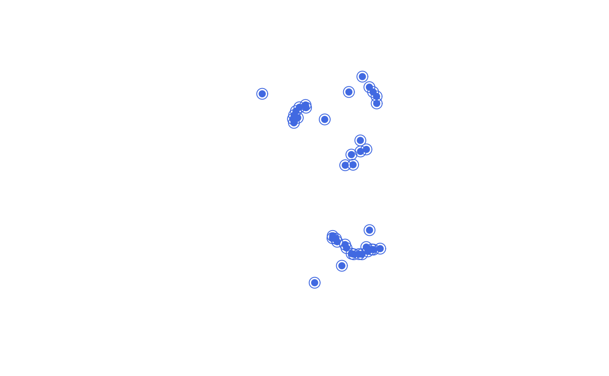
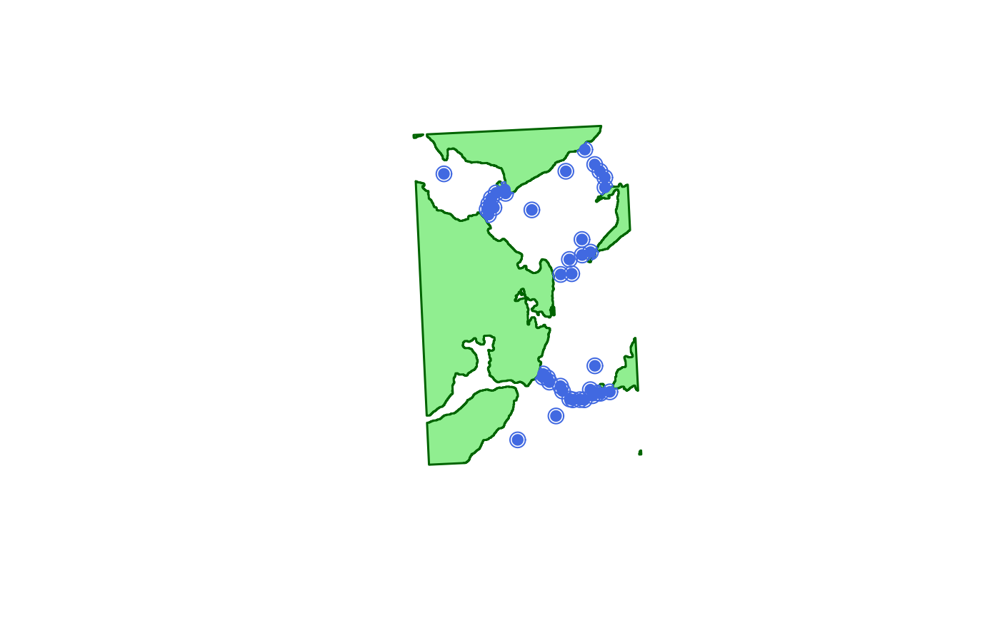
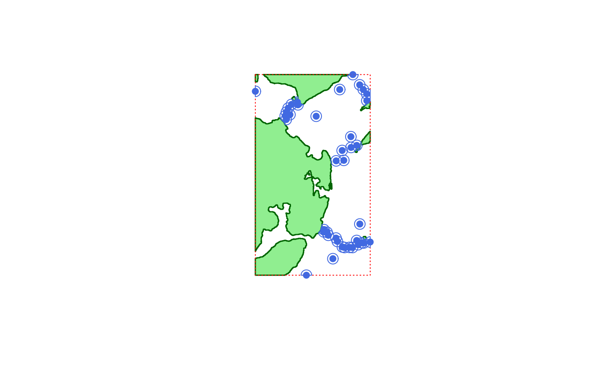

R/acs_setup.R
acs_setup_centroids.RdThis function produces the detection centroids required by the acoustic-centroid (AC) and acoustic-centroid depth-contour (ACDC) algorithms.
acs_setup_centroids( xy, detection_range, coastline = NULL, boundaries = NULL, plot = FALSE, verbose = TRUE, ... )
| xy | A |
|---|---|
| detection_range | A number that defines the maximum detection range (m) at which an individual could be detected from a receiver. |
| coastline | (optional) A |
| boundaries | (optional) An |
| plot | A logical input that defines whether or not to produce a plot of the area, including receivers, the coastline and the area boundaries (if provided), and acoustic centroids. This is useful for checking purposes but it can reduce algorithm speed. |
| verbose | A logical input that defines whether or not to print messages to the console to relay function progress. |
| ... | Additional arguments passed to |
The function returns a list of SpatialPolygonsDataFrame-class objects, with one element for all numbers from 1 to the maximum receiver number (xy$receiver_id). Any list elements that do not correspond to receivers contain a NULL element. List elements that correspond to receivers contain a SpatialPolygonsDataFrame-class object containing the detection centroid for that receiver.
Given a detection at a particular receiver at a particular time, the detection centroid defines the boundaries of the area around a receiver within which the individual must have been located (from the perspective of that receiver).
Edward Lavender
#### Define data for acs_setup_centroids() ## Define coordinates of receivers as SpatialPointsDataFrame with UTM CRS # CRS of receiver locations as recorded in dat_moorings proj_wgs84 <- sp::CRS(SRS_string = "EPSG:4326") # CRS of receiver locations required proj_utm <- sp::CRS(SRS_string = "EPSG:32629") # Define SpatialPoints object xy_wgs84 <- sp::SpatialPoints(dat_moorings[, c("receiver_long", "receiver_lat")], proj_wgs84) xy_utm <- sp::spTransform(xy_wgs84, proj_utm) # Link with receiver IDs to define a SpatialPointsDataFrame xy_utm <- sp::SpatialPointsDataFrame(xy_utm, dat_moorings[, "receiver_id", drop = FALSE]) #### Example (1): Define a list of centroids with specified parameters # ... (Argument values are small to reduce computation time for examples) centroids <- acs_setup_centroids(xy = xy_utm, detection_range = 500 )#> flapper::acs_setup_detection_centroids() called (@ 2021-12-02 14:35:48)... #> ... Checking user inputs... #> ... Making centroids... #> ... Processing centroids... #> ... flapper::acs_setup_detection_centroids() call completed (@ 2021-12-02 14:35:48) after ~0 minutes.# A list of SpatialPolygonsDataFrames is returned # with elements from 1:max(xy_utm$receiver_id) # NULL elements correspond to numbers in this sequence that do not refer to receivers # Otherwise a SpatialPolygonsDataFrame is returned with all the centroids for that receiver centroids#> [[1]] #> NULL #> #> [[2]] #> NULL #> #> [[3]] #> class : SpatialPolygonsDataFrame #> features : 1 #> extent : 705972.2, 706972.2, 6253501, 6254501 (xmin, xmax, ymin, ymax) #> crs : +proj=utm +zone=29 +datum=WGS84 +units=m +no_defs #> variables : 4 #> names : receiver_id, receiver_long, receiver_lat, optional #> value : 3, 706472.237977747, 6254001.47143853, 1 #> #> [[4]] #> class : SpatialPolygonsDataFrame #> features : 1 #> extent : 709257.8, 710257.8, 6267227, 6268227 (xmin, xmax, ymin, ymax) #> crs : +proj=utm +zone=29 +datum=WGS84 +units=m +no_defs #> variables : 4 #> names : receiver_id, receiver_long, receiver_lat, optional #> value : 4, 709757.838706845, 6267726.89057173, 1 #> #> [[5]] #> NULL #> #> [[6]] #> NULL #> #> [[7]] #> class : SpatialPolygonsDataFrame #> features : 1 #> extent : 708276.6, 709276.6, 6268637, 6269637 (xmin, xmax, ymin, ymax) #> crs : +proj=utm +zone=29 +datum=WGS84 +units=m +no_defs #> variables : 4 #> names : receiver_id, receiver_long, receiver_lat, optional #> value : 7, 708776.612630041, 6269137.04656454, 1 #> #> [[8]] #> NULL #> #> [[9]] #> class : SpatialPolygonsDataFrame #> features : 1 #> extent : 705539.9, 706539.9, 6253830, 6254830 (xmin, xmax, ymin, ymax) #> crs : +proj=utm +zone=29 +datum=WGS84 +units=m +no_defs #> variables : 4 #> names : receiver_id, receiver_long, receiver_lat, optional #> value : 9, 706039.851551317, 6254329.75898771, 1 #> #> [[10]] #> NULL #> #> [[11]] #> class : SpatialPolygonsDataFrame #> features : 1 #> extent : 707042.3, 708042.3, 6267227, 6268227 (xmin, xmax, ymin, ymax) #> crs : +proj=utm +zone=29 +datum=WGS84 +units=m +no_defs #> variables : 4 #> names : receiver_id, receiver_long, receiver_lat, optional #> value : 11, 707542.34971065, 6267727.0245263, 1 #> #> [[12]] #> class : SpatialPolygonsDataFrame #> features : 1 #> extent : 709576.1, 710576.1, 6266821, 6267821 (xmin, xmax, ymin, ymax) #> crs : +proj=utm +zone=29 +datum=WGS84 +units=m +no_defs #> variables : 4 #> names : receiver_id, receiver_long, receiver_lat, optional #> value : 12, 710076.090170494, 6267320.89031923, 1 #> #> [[13]] #> NULL #> #> [[14]] #> class : SpatialPolygonsDataFrame #> features : 1 #> extent : 703120.8, 704120.8, 6265789, 6266789 (xmin, xmax, ymin, ymax) #> crs : +proj=utm +zone=29 +datum=WGS84 +units=m +no_defs #> variables : 4 #> names : receiver_id, receiver_long, receiver_lat, optional #> value : 14, 703620.828045288, 6266289.28828596, 1 #> #> [[15]] #> NULL #> #> [[16]] #> NULL #> #> [[17]] #> NULL #> #> [[18]] #> class : SpatialPolygonsDataFrame #> features : 1 #> extent : 708105.6, 709105.6, 6261775, 6262775 (xmin, xmax, ymin, ymax) #> crs : +proj=utm +zone=29 +datum=WGS84 +units=m +no_defs #> variables : 4 #> names : receiver_id, receiver_long, receiver_lat, optional #> value : 18, 708605.560505287, 6262275.05546168, 1 #> #> [[19]] #> NULL #> #> [[20]] #> class : SpatialPolygonsDataFrame #> features : 1 #> extent : 702012.6, 703012.6, 6264400, 6265400 (xmin, xmax, ymin, ymax) #> crs : +proj=utm +zone=29 +datum=WGS84 +units=m +no_defs #> variables : 4 #> names : receiver_id, receiver_long, receiver_lat, optional #> value : 20, 702512.639477486, 6264900.03635278, 1 #> #> [[21]] #> class : SpatialPolygonsDataFrame #> features : 1 #> extent : 708244.2, 709244.2, 6252351, 6253351 (xmin, xmax, ymin, ymax) #> crs : +proj=utm +zone=29 +datum=WGS84 +units=m +no_defs #> variables : 4 #> names : receiver_id, receiver_long, receiver_lat, optional #> value : 21, 708744.224623811, 6252850.83006878, 1 #> #> [[22]] #> NULL #> #> [[23]] #> class : SpatialPolygonsDataFrame #> features : 1 #> extent : 702364.7, 703364.7, 6264861, 6265861 (xmin, xmax, ymin, ymax) #> crs : +proj=utm +zone=29 +datum=WGS84 +units=m +no_defs #> variables : 4 #> names : receiver_id, receiver_long, receiver_lat, optional #> value : 23, 702864.703528681, 6265360.98651514, 1 #> #> [[24]] #> class : SpatialPolygonsDataFrame #> features : 1 #> extent : 708644.6, 709644.6, 6261965, 6262965 (xmin, xmax, ymin, ymax) #> crs : +proj=utm +zone=29 +datum=WGS84 +units=m +no_defs #> variables : 4 #> names : receiver_id, receiver_long, receiver_lat, optional #> value : 24, 709144.620204365, 6262465.13201869, 1 #> #> [[25]] #> NULL #> #> [[26]] #> class : SpatialPolygonsDataFrame #> features : 1 #> extent : 708775.6, 709775.6, 6252617, 6253617 (xmin, xmax, ymin, ymax) #> crs : +proj=utm +zone=29 +datum=WGS84 +units=m +no_defs #> variables : 4 #> names : receiver_id, receiver_long, receiver_lat, optional #> value : 26, 709275.587533625, 6253116.72186051, 1 #> #> [[27]] #> class : SpatialPolygonsDataFrame #> features : 1 #> extent : 703910.1, 704910.1, 6249743, 6250743 (xmin, xmax, ymin, ymax) #> crs : +proj=utm +zone=29 +datum=WGS84 +units=m +no_defs #> variables : 4 #> names : receiver_id, receiver_long, receiver_lat, optional #> value : 27, 704410.062684187, 6250242.84019987, 1 #> #> [[28]] #> NULL #> #> [[29]] #> class : SpatialPolygonsDataFrame #> features : 1 #> extent : 699113.2, 700113.2, 6267058, 6268058 (xmin, xmax, ymin, ymax) #> crs : +proj=utm +zone=29 +datum=WGS84 +units=m +no_defs #> variables : 4 #> names : receiver_id, receiver_long, receiver_lat, optional #> value : 29, 699613.246077539, 6267558.48978002, 1 #> #> [[30]] #> class : SpatialPolygonsDataFrame #> features : 1 #> extent : 707295.1, 708295.1, 6252403, 6253403 (xmin, xmax, ymin, ymax) #> crs : +proj=utm +zone=29 +datum=WGS84 +units=m +no_defs #> variables : 4 #> names : receiver_id, receiver_long, receiver_lat, optional #> value : 30, 707795.055093706, 6252902.81442825, 1 #> #> [[31]] #> class : SpatialPolygonsDataFrame #> features : 1 #> extent : 709290.5, 710290.5, 6252776, 6253776 (xmin, xmax, ymin, ymax) #> crs : +proj=utm +zone=29 +datum=WGS84 +units=m +no_defs #> variables : 4 #> names : receiver_id, receiver_long, receiver_lat, optional #> value : 31, 709790.510737235, 6253275.94670318, 1 #> #> [[32]] #> NULL #> #> [[33]] #> class : SpatialPolygonsDataFrame #> features : 1 #> extent : 706823.1, 707823.1, 6252924, 6253924 (xmin, xmax, ymin, ymax) #> crs : +proj=utm +zone=29 +datum=WGS84 +units=m +no_defs #> variables : 4 #> names : receiver_id, receiver_long, receiver_lat, optional #> value : 33, 707323.074814243, 6253424.16474594, 1 #> #> [[34]] #> NULL #> #> [[35]] #> class : SpatialPolygonsDataFrame #> features : 1 #> extent : 708090.7, 709090.7, 6262787, 6263787 (xmin, xmax, ymin, ymax) #> crs : +proj=utm +zone=29 +datum=WGS84 +units=m +no_defs #> variables : 4 #> names : receiver_id, receiver_long, receiver_lat, optional #> value : 35, 708590.650204488, 6263287.07874507, 1 #> #> [[36]] #> class : SpatialPolygonsDataFrame #> features : 1 #> extent : 708931.1, 709931.1, 6254563, 6255563 (xmin, xmax, ymin, ymax) #> crs : +proj=utm +zone=29 +datum=WGS84 +units=m +no_defs #> variables : 4 #> names : receiver_id, receiver_long, receiver_lat, optional #> value : 36, 709431.056489983, 6255062.70399093, 1 #> #> [[37]] #> class : SpatialPolygonsDataFrame #> features : 1 #> extent : 706400.2, 707400.2, 6251298, 6252298 (xmin, xmax, ymin, ymax) #> crs : +proj=utm +zone=29 +datum=WGS84 +units=m +no_defs #> variables : 4 #> names : receiver_id, receiver_long, receiver_lat, optional #> value : 37, 706900.208559446, 6251798.00038536, 1 #> #> [[38]] #> class : SpatialPolygonsDataFrame #> features : 1 #> extent : 707271.9, 708271.9, 6261487, 6262487 (xmin, xmax, ymin, ymax) #> crs : +proj=utm +zone=29 +datum=WGS84 +units=m +no_defs #> variables : 4 #> names : receiver_id, receiver_long, receiver_lat, optional #> value : 38, 707771.919408766, 6261986.83813631, 1 #> #> [[39]] #> class : SpatialPolygonsDataFrame #> features : 1 #> extent : 704831, 705831, 6264713, 6265713 (xmin, xmax, ymin, ymax) #> crs : +proj=utm +zone=29 +datum=WGS84 +units=m +no_defs #> variables : 4 #> names : receiver_id, receiver_long, receiver_lat, optional #> value : 39, 705331.007064075, 6265212.51343058, 1 #> #> [[40]] #> class : SpatialPolygonsDataFrame #> features : 1 #> extent : 708918.4, 709918.4, 6267669, 6268669 (xmin, xmax, ymin, ymax) #> crs : +proj=utm +zone=29 +datum=WGS84 +units=m +no_defs #> variables : 4 #> names : receiver_id, receiver_long, receiver_lat, optional #> value : 40, 709418.368318636, 6268169.10033173, 1 #> #> [[41]] #> class : SpatialPolygonsDataFrame #> features : 1 #> extent : 703076, 704076, 6266036, 6267036 (xmin, xmax, ymin, ymax) #> crs : +proj=utm +zone=29 +datum=WGS84 +units=m +no_defs #> variables : 4 #> names : receiver_id, receiver_long, receiver_lat, optional #> value : 41, 703576.003622304, 6266536.09000155, 1 #> #> [[42]] #> NULL #> #> [[43]] #> class : SpatialPolygonsDataFrame #> features : 1 #> extent : 707489.4, 708489.4, 6252351, 6253351 (xmin, xmax, ymin, ymax) #> crs : +proj=utm +zone=29 +datum=WGS84 +units=m +no_defs #> variables : 4 #> names : receiver_id, receiver_long, receiver_lat, optional #> value : 43, 707989.389162253, 6252851.01070556, 1 #> #> [[44]] #> class : SpatialPolygonsDataFrame #> features : 1 #> extent : 709587.4, 710587.4, 6266178, 6267178 (xmin, xmax, ymin, ymax) #> crs : +proj=utm +zone=29 +datum=WGS84 +units=m +no_defs #> variables : 4 #> names : receiver_id, receiver_long, receiver_lat, optional #> value : 44, 710087.448896256, 6266678.41000209, 1 #> #> [[45]] #> class : SpatialPolygonsDataFrame #> features : 1 #> extent : 708634.5, 709634.5, 6253011, 6254011 (xmin, xmax, ymin, ymax) #> crs : +proj=utm +zone=29 +datum=WGS84 +units=m +no_defs #> variables : 4 #> names : receiver_id, receiver_long, receiver_lat, optional #> value : 45, 709134.451181599, 6253511.1606833, 1 #> #> [[46]] #> class : SpatialPolygonsDataFrame #> features : 1 #> extent : 702030.4, 703030.4, 6265101, 6266101 (xmin, xmax, ymin, ymax) #> crs : +proj=utm +zone=29 +datum=WGS84 +units=m +no_defs #> variables : 4 #> names : receiver_id, receiver_long, receiver_lat, optional #> value : 46, 702530.410574209, 6265601.37925326, 1 #> #> [[47]] #> class : SpatialPolygonsDataFrame #> features : 1 #> extent : 702512.8, 703512.8, 6265823, 6266823 (xmin, xmax, ymin, ymax) #> crs : +proj=utm +zone=29 +datum=WGS84 +units=m +no_defs #> variables : 4 #> names : receiver_id, receiver_long, receiver_lat, optional #> value : 47, 703012.757869926, 6266323.23956501, 1 #> #> [[48]] #> class : SpatialPolygonsDataFrame #> features : 1 #> extent : 706695.3, 707695.3, 6253239, 6254239 (xmin, xmax, ymin, ymax) #> crs : +proj=utm +zone=29 +datum=WGS84 +units=m +no_defs #> variables : 4 #> names : receiver_id, receiver_long, receiver_lat, optional #> value : 48, 707195.281171695, 6253739.36429899, 1 #> #> [[49]] #> class : SpatialPolygonsDataFrame #> features : 1 #> extent : 705852.3, 706852.3, 6253784, 6254784 (xmin, xmax, ymin, ymax) #> crs : +proj=utm +zone=29 +datum=WGS84 +units=m +no_defs #> variables : 4 #> names : receiver_id, receiver_long, receiver_lat, optional #> value : 49, 706352.314484401, 6254283.62589339, 1 #> #> [[50]] #> class : SpatialPolygonsDataFrame #> features : 1 #> extent : 707425.6, 708425.6, 6260558, 6261558 (xmin, xmax, ymin, ymax) #> crs : +proj=utm +zone=29 +datum=WGS84 +units=m +no_defs #> variables : 4 #> names : receiver_id, receiver_long, receiver_lat, optional #> value : 50, 707925.605617203, 6261057.79757075, 1 #> #> [[51]] #> class : SpatialPolygonsDataFrame #> features : 1 #> extent : 706707.4, 707707.4, 6260511, 6261511 (xmin, xmax, ymin, ymax) #> crs : +proj=utm +zone=29 +datum=WGS84 +units=m +no_defs #> variables : 4 #> names : receiver_id, receiver_long, receiver_lat, optional #> value : 51, 707207.430187169, 6261011.42556153, 1 #> #> [[52]] #> class : SpatialPolygonsDataFrame #> features : 1 #> extent : 702198.1, 703198.1, 6265474, 6266474 (xmin, xmax, ymin, ymax) #> crs : +proj=utm +zone=29 +datum=WGS84 +units=m +no_defs #> variables : 4 #> names : receiver_id, receiver_long, receiver_lat, optional #> value : 52, 702698.057272382, 6265973.99135867, 1 #> #> [[53]] #> class : SpatialPolygonsDataFrame #> features : 1 #> extent : 705558.6, 706558.6, 6254034, 6255034 (xmin, xmax, ymin, ymax) #> crs : +proj=utm +zone=29 +datum=WGS84 +units=m +no_defs #> variables : 4 #> names : receiver_id, receiver_long, receiver_lat, optional #> value : 53, 706058.562480969, 6254534.03230611, 1 #> #> [[54]] #> class : SpatialPolygonsDataFrame #> features : 1 #> extent : 701922.5, 702922.5, 6264753, 6265753 (xmin, xmax, ymin, ymax) #> crs : +proj=utm +zone=29 +datum=WGS84 +units=m +no_defs #> variables : 4 #> names : receiver_id, receiver_long, receiver_lat, optional #> value : 54, 702422.531139993, 6265252.59847609, 1 #> #> [[55]] #> class : SpatialPolygonsDataFrame #> features : 1 #> extent : 709905.8, 710905.8, 6252868, 6253868 (xmin, xmax, ymin, ymax) #> crs : +proj=utm +zone=29 +datum=WGS84 +units=m +no_defs #> variables : 4 #> names : receiver_id, receiver_long, receiver_lat, optional #> value : 55, 710405.757752217, 6253367.62261389, 1 #> #> [[56]] #> class : SpatialPolygonsDataFrame #> features : 1 #> extent : 709123.1, 710123.1, 6252797, 6253797 (xmin, xmax, ymin, ymax) #> crs : +proj=utm +zone=29 +datum=WGS84 +units=m +no_defs #> variables : 4 #> names : receiver_id, receiver_long, receiver_lat, optional #> value : 56, 709623.053614371, 6253296.88416775, 1 #> #> [[57]] #> class : SpatialPolygonsDataFrame #> features : 1 #> extent : 707967.6, 708967.6, 6252362, 6253362 (xmin, xmax, ymin, ymax) #> crs : +proj=utm +zone=29 +datum=WGS84 +units=m +no_defs #> variables : 4 #> names : receiver_id, receiver_long, receiver_lat, optional #> value : 57, 708467.606224498, 6252861.98611045, 1 #>#### Example (2): Visualise the centroids produced via plot = TRUE centroids <- acs_setup_centroids(xy = xy_utm, detection_range = 500, plot = TRUE )#> flapper::acs_setup_detection_centroids() called (@ 2021-12-02 14:35:48)... #> ... Checking user inputs... #> ... Plotting background map of area...#> ... Making centroids... #> ... Plotting centroids on map... #> ... Processing centroids... #> ... flapper::acs_setup_detection_centroids() call completed (@ 2021-12-02 14:35:48) after ~0 minutes.#### Example (3): Remove areas of the centroids that overlap with coastline centroids <- acs_setup_centroids(xy = xy_utm, detection_range = 500, plot = TRUE, coastline = dat_coast )#> flapper::acs_setup_detection_centroids() called (@ 2021-12-02 14:35:48)... #> ... Checking user inputs... #> ... Plotting background map of area...#> ... Making centroids... #> ... Plotting centroids on map... #> ... Processing centroids... #> ... flapper::acs_setup_detection_centroids() call completed (@ 2021-12-02 14:35:50) after ~0.03 minutes.#### Example (4): Remove areas of the centroids beyond a boundary xy_utm_coords <- sp::coordinates(xy_utm) boundaries <- raster::extent(min(xy_utm_coords[, 1]), max(xy_utm_coords[, 1]), min(xy_utm_coords[, 2]), max(xy_utm_coords[, 2]) ) centroids <- acs_setup_centroids(xy = xy_utm, detection_range = 500, plot = TRUE, coastline = dat_coast, boundaries = boundaries )#> flapper::acs_setup_detection_centroids() called (@ 2021-12-02 14:35:50)... #> ... Checking user inputs... #> ... Plotting background map of area...#> ... Making centroids... #> ... Plotting centroids on map... #> ... Processing centroids... #> ... flapper::acs_setup_detection_centroids() call completed (@ 2021-12-02 14:35:51) after ~0.02 minutes.